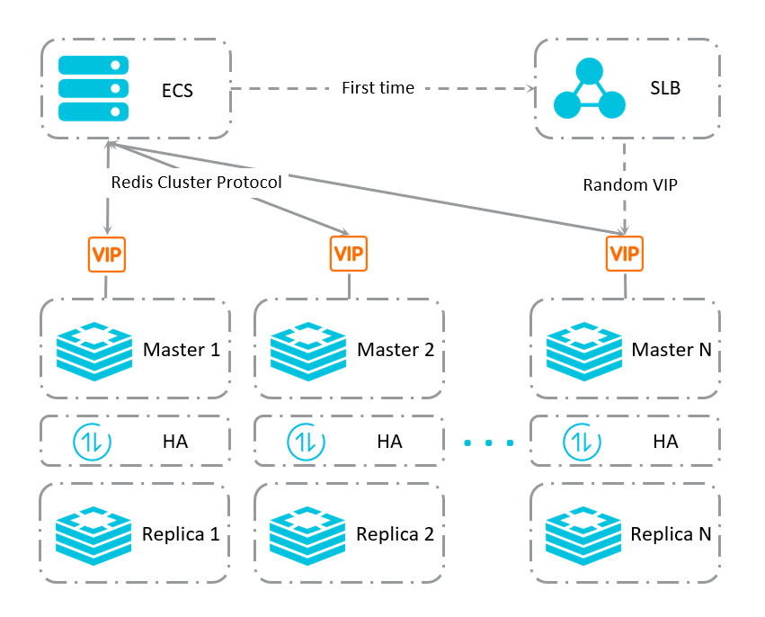
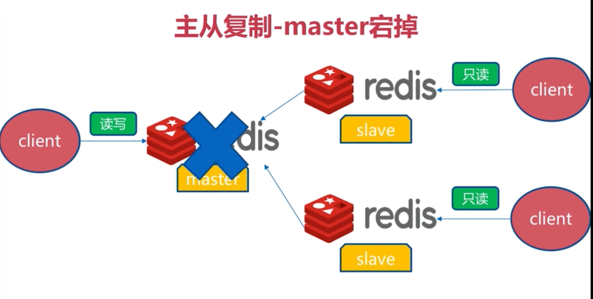
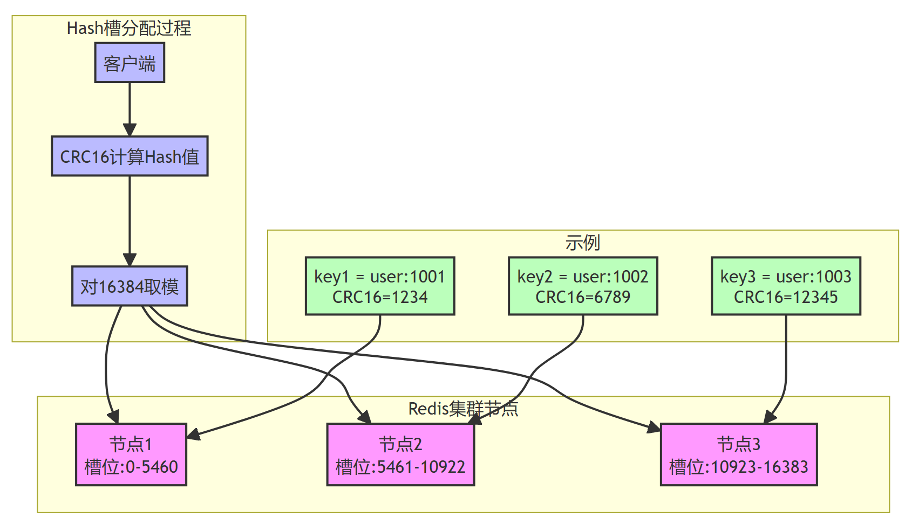
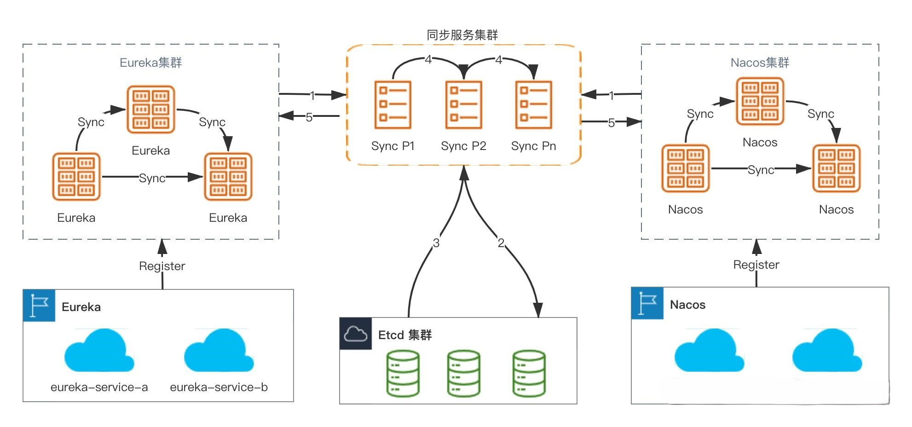

概述
Redis单实例的架构，从最开始的一主N从，到读写分离，再到Sentinel哨兵机制，单实例的Redis缓存足以应对大多数的使用场景，也能实现主从故障迁移。
但是，在某些场景下，单实例存Redis缓存会存在的几个问题:
写并发：Redis单实例读写分离可以解决读操作的负载均衡，但对于写操作，仍然是全部落在了master节点上面，在海量数据高并发场景，一个节点写数据容易出现瓶颈，造成master节点的压力上升。
海量数据的存储压力：单实例Redis本质上只有一台Master作为存储，如果面对海量数据的存储，一台Redis的服务器就应付不过来了，而且数据量太大意味着持久化成本高，严重时可能会阻塞服务器，造成服务请求成功率下降，降低服务的稳定性。
针对以上的问题，Redis集群提供了较为完善的方案，解决了存储能力受到单机限制，写操作无法负载均衡的问题。 Redis提供了去中心化的集群部署模式，集群内所有Redis节点之间两两连接，而很多的客户端工具会根据key将请求分发到对应的分片下的某一个节点上进行处理。Redis也内置了高可用机制，支持N个master节点，每个master节点都可以挂载多个slave节点，当master节点挂掉时，集群会提升它的某个slave节点作为新的master节点。 默认情况下，redis集群的读和写都是到master上去执行的，不支持slave节点读和写，跟Redis主从复制下读写分离不一样，因为redis集群的核心的理念，主要是使用slave做数据的热备，以及master故障时的主备切换，实现高可用的。Redis的读写分离，是为了横向任意扩展slave节点去支撑更大的读吞吐量。而redis集群架构下，本身master就是可以任意扩展的，如果想要支撑更大的读或写的吞吐量，都可以直接对master进行横向扩展。

在Redis集群里面，又会划分出分区的概念，一个集群中可有多个分区。分区有几个特点：
1.同一个分区内的Redis节点之间的数据完全一样，多个节点保证了数据有多份副本冗余保存，且可以提供高可用保障。
2.不同分片之间的数据不相同。
3.通过水平增加多个分片的方式，可以实现整体集群的容量的扩展。
按照Cluster模式进行部署的时候，要求最少需要部署6个Redis节点（3个分片，每个分片中1主1从），其中集群中每个分片的master节点负责对外提供读写操作，slave节点则作为故障转移使用（master出现故障的时候充当新的master）、对外提供只读请求处理。
集群数据分布策略
Redis Sharding(数据分片)
在Redis Cluster前，为了解决数据分发到各个分区的问题，普遍采用的是Redis Sharding（数据分片）方案。所谓的Sharding，其实就是一种数据分发的策略。根据key的hash值进行取模，确定最终归属的节点。
优点就是比较简单,但是:扩容或者摘除节点时需要重新根据映射关系计算，会导致数据重新迁移。集群扩容的时候，会导致请求被分发到错误节点上，导致缓存命中率降低。

如果需要解决这个问题，就需要对原先扩容前已经存储的数据重新进行一次hash计算和取模操作，将全部的数据重新分发到新的正确节点上进行存储。这个操作被称为重新Sharding，重新sharding期间服务不可用，可能会对业务造成影响。
一致性Hash
为了降低节点的增加或者移除对于整体已有缓存数据访问的影响，最大限度的保证缓存命中率，改良后的一致性Hash算法浮出水面。
Hash槽
何为Hash槽？Hash槽的原理与HashMap有点相似，Redis集群中有16384个哈希槽（槽的范围是 0 -16383，哈希槽），将不同的哈希槽分布在不同的Redis节点上面进行管理，也就是说每个Redis节点只负责一部分的哈希槽。在对数据进行操作的时候，集群会对使用CRC16算法对key进行计算并对16384取模（slot = CRC16(key)%16383），得到的结果就是 Key-Value 所放入的槽，通过这个值，去找到对应的槽所对应的Redis节点，然后直接到这个对应的节点上进行存取操作。

使用哈希槽的好处就在于可以方便的添加或者移除节点，并且无论是添加删除或者修改某一个节点，都不会造成集群不可用的状态。
当需要增加节点时，只需要把其他节点的某些哈希槽挪到新节点就可以了;
当需要移除节点时，只需要把移除节点上的哈希槽挪到其他节点就行了;
哈希槽数据分区算法具有以下几种特点:
解耦数据和节点之间的关系，简化了扩容和收缩难度;
节点自身维护槽的映射关系，不需要客户端代理服务维护槽分区元数据;
支持节点、槽、键之间的映射查询，用于数据路由，在线伸缩等场景;
为什么redis集群采用“hash槽”来解决数据分配问题，而不采用“一致性hash”算法呢?
一致性哈希的节点分布基于圆环，无法很好的手动控制数据分布，比如有些节点的硬件差，希望少存一点数据，这种很难操作（还得通过虚拟节点映射，总之较繁琐）。
而redis集群的槽位空间是可以用户手动自定义分配的，类似于 windows 盘分区的概念，可以手动控制大小。
其实，无论是 “一致性哈希” 还是 “hash槽” 的方式，在增减节点的时候，都会对一部分数据产生影响，都需要我们迁移数据。当然，redis集群也提供了相关手动迁移槽数据的命令。
Hash槽原理详解
clusterNode
保存节点的当前状态，比如节点的创建时间，节点的名字，节点当前的配置纪元，节点的IP和地址，等等。
typedef struct clusterNode {
//创建节点的时间
mstime_t ctime;
//节点的名字，由40个16进制字符组成
char name[CLUSTER_NAMELEN];
//节点标识 使用各种不同的标识值记录节点的角色(比如主节点或者从节点)
char shard_id[CLUSTER_NAMELEN];
//以及节点目前所处的状态(比如在线或者下线)
int flags;
//节点当前的配置纪元，用于实现故障转移
uint64_t configEpoch;
//由这个节点负责处理的槽
//一共有REDISCLUSTER SLOTS/8个字节长 每个字节的每个位记录了一个槽的保存状态
// 位的值为 1 表示槽正由本节点处理，值为0则表示槽并非本节点处理
unsigned char slots[CLUSTER_SLOTS/8];
uint16_t *slot_info_pairs; /* Slots info represented as (start/end) pair (consecutive index). */
int slot_info_pairs_count; /* Used number of slots in slot_info_pairs */
//该节点负责处理的槽数里
int numslots;
//如果本节点是主节点，那么用这个属性记录从节点的数里
int numslaves;
//指针数组，指向各个从节点
struct clusterNode **slaves;
//如果这是一个从节点，那么指向主节点
struct clusterNode *slaveof;
unsigned long long last_in_ping_gossip; /* The number of the last carried in the ping gossip section */
//最后一次发送 PING 命令的时间
mstime_t ping_sent;
//最后一次接收 PONG 回复的时间戳
mstime_t pong_received;
mstime_t data_received;
//最后一次被设置为 FAIL 状态的时间
mstime_t fail_time;
// 最后一次给某个从节点投票的时间
mstime_t voted_time;
//最后一次从这个节点接收到复制偏移里的时间
mstime_t repl_offset_time;
mstime_t orphaned_time;
//这个节点的复制偏移里
long long repl_offset;
//节点的 IP 地址
char ip[NET_IP_STR_LEN];
sds hostname; /* The known hostname for this node */
//节点的端口号
int port;
int pport; /* Latest known clients plaintext port. Only used
if the main clients port is for TLS. */
int cport; /* Latest known cluster port of this node. */
//保存连接节点所需的有关信息
clusterLink *link;
clusterLink *inbound_link; /* TCP/IP link accepted from this node */
//链表，记录了所有其他节点对该节点的下线报告
list *fail_reports;
} clusterNode;
clusterState
记录当前节点所认为的集群目前所处的状态。
typedef struct clusterState {
//指向当前节点的指针
clusterNode *myself;
//集群当前的配置纪元，用于实现故障转移
uint64_t currentEpoch;
// 集群当前的状态:是在线还是下线
int state;
//集群中至少处理着一个槽的节点的数量。
int size;
//集群节点名单(包括 myself 节点)
//字典的键为节点的名字，字典的值为 clusterWode 结构
dict *nodes;
dict *shards; /* Hash table of shard_id -> list (of nodes) structures */
//节点黑名单，用于CLUSTER FORGET 命令
//防止被 FORGET 的命令重新被添加到集群里面
dict *nodes_black_list;
//记录要从当前节点迁移到目标节点的槽，以及迁移的目标节点
//migrating_slots_to[i]= NULL 表示槽 i 未被迁移
//migrating_slots_to[i]= clusterNode_A 表示槽i要从本节点迁移至节点 A
clusterNode *migrating_slots_to[CLUSTER_SLOTS];
//记录要从源节点迁移到本节点的槽，以及进行迁移的源节点
//importing_slots_from[i]= NULL 表示槽 i 未进行导入
//importing_slots from[i]=clusterNode A 表示正从节点A中导入槽 i
clusterNode *importing_slots_from[CLUSTER_SLOTS];
//负责处理各个槽的节点
//例如 slots[i]=clusterNode_A 表示槽i由节点A处理
clusterNode *slots[CLUSTER_SLOTS];
rax *slots_to_channels;
//以下这些值被用于进行故障转移选举
//上次执行选举或者下次执行选举的时间
mstime_t failover_auth_time;
//节点获得的投票数量
int failover_auth_count;
//如果值为 1，表示本节点已经向其他节点发送了投票请求
int failover_auth_sent;
int failover_auth_rank; /* This slave rank for current auth request. */
uint64_t failover_auth_epoch; /* Epoch of the current election. */
int cant_failover_reason; /* Why a slave is currently not able to
failover. See the CANT_FAILOVER_* macros. */
/*共用的手动故障转移状态*/
//手动故障转移执行的时间限制
mstime_t mf_end;
/*主服务器的手动故障转移状态 */
clusterNode *mf_slave;
/*丛服务器的手动故障转移状态 */
long long mf_master_offset;
// 指示手动故障转移是否可以开始的标志值 值为非 0 时表示各个主服务器可以开始投票
int mf_can_start;
/*以下这些值由主服务器使用，用于记录选举时的状态*/
//集群最后一次进行投票的纪元
uint64_t lastVoteEpoch;
//在进入下个事件循环之前要做的事情，以各个 flag 来记录
int todo_before_sleep;
/* Stats */
//通过 cluster 连接发送的消息数量
long long stats_bus_messages_sent[CLUSTERMSG_TYPE_COUNT];
//通过cluster 接收到的消息数量
long long stats_bus_messages_received[CLUSTERMSG_TYPE_COUNT];
long long stats_pfail_nodes; /* Number of nodes in PFAIL status,
excluding nodes without address. */
unsigned long long stat_cluster_links_buffer_limit_exceeded; /* Total number of cluster links freed due to exceeding buffer limit */
} clusterState;
节点的槽指派信息
clusterNode数据结构的slots属性和numslot属性记录了节点负责处理那些槽：
slots属性是一个二进制位数组(bit array)，这个数组的长度为16384/8=2048个字节，共包含16384个二进制位。Master节点用bit来标识对于某个槽自己是否拥有，时间复杂度为O(1)
集群所有槽的指派信息
当收到集群中其他节点发送的信息时，通过将节点槽的指派信息保存在本地的clusterState.slots数组里面，程序要检查槽i是否已经被指派，又或者取得负责处理槽i的节点，只需要访问clusterState.slots[i]的值即可，时间复杂度仅为O(1)
ClusterState 中保存的 Slots 数组中每个下标对应一个槽，每个槽信息中对应一个 clusterNode 也就是缓存的节点。这些节点会对应一个实际存在的 Redis 缓存服务，包括 IP 和 Port 的信息。Redis Cluster 的通讯机制实际上保证了每个节点都有其他节点和槽数据的对应关系。无论Redis 的客户端访问集群中的哪个节点都可以路由到对应的节点上，因为每个节点都有一份 ClusterState，它记录了所有槽和节点的对应关系。

评论区